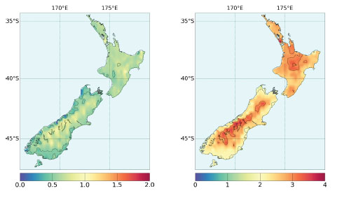

Solution for: Global Warming in New Zealand
Answer Table
| 1. D | 8. agricultural production |
| 2. B | 9. coastal boundaries |
| 3. A | 10. NOT GIVEN |
| 4. C | 11. NOT GIVEN |
| 5. A | 12. NO |
| 6. A | 13. YES |
| 7. high tides | 14. NO |
Exam Review


Global Warming in New Zealand
For many environmentalists, the world seems to be getting warmer. As the nearest country of South Polar Region, New Zealand has maintained an upward trend in its average temperature in the past few years. However, the temperature in New Zealand will go up 4oC in the next century while the polar region will go up more than 6oC. The different pictures of temperature stem from its surrounding ocean which acts like the air conditioner. Thus New Zealand is comparatively fortunate.
|
Q1: What is the main idea of the first paragraph? A The temperature in the polar region will increase less than that in New Zealand in the next century. B The weather and climate of New Zealand is very important to its people because of its close location to the polar region. C The air condition in New Zealand will maintain a high quality because of the ocean. D The temperature of New Zealand will increase less than that of other region in the next 100 years because it is surrounded by sea. First of all, you should locate parts of the passage where you could potentially find the answer. Take a look at the question itself, it asks us the main idea of the first paragraph => The answer must be somewhere in the first paragraph. After reading the whole first paragraph, you could rule out option A, B, C because:
Option D is the correct answer because:
|
|
|
Keywords in Answer |
Similar words in Passage |
|
Q1: The temperature of New Zealand will increase less than that of other region in the next 100 years because it is surrounded by sea. |
However, the temperature in New Zealand will go up 4oC in the next century while the polar region will go up more than 6oC. The different pictures of temperature stem from its surrounding ocean which acts like the air conditioner. |
Scientifically speaking, this temperature phenomenon in New Zealand originated from what researchers call “SAM” (Southern Annular Mode), which refers to the wind belt that circles the Southern Oceans including New Zealand and Antarctica. Yet recent work has revealed that changes in SAM in New Zealand have resulted in a weakening of moisture during the summer, and more rainfall in other seasons. A bigger problem may turn out to be heavier droughts for agricultural activities because of more water loss from soil, resulting in poorer harvest before winter when the rainfall arrive too late to rescue.
|
Q2: What is one effect of the wind belt that circles the Southern Oceans? A New Zealand will have more moisture in winds in summer. B New Zealand needs to face droughts more often in hotter months in a year. C Soil water will increase as a result of weakening moisture in the winds D Agricultural production will be reduced as a result of more rainfall in other seasons. Take a look at the question itself, it asks us one effect of the wind belt that circles the Southern Oceans => The keyword here is wind belt. By using skimming, we locate the keyword in the second paragraph => The answer must be somewhere in the second paragraph. After reading the whole second paragraph, you could rule out option A, C, D because:
Option B is the correct answer because it is confirmed by the information found in the text (“A bigger problem may turn out to be heavier droughts for agricultural activities because of more water loss from soil, resulting in poorer harvest before winter when the rainfall arrive too late to rescue.”) |
|
|
Keywords in Answer |
Similar words in Passage |
|
Q2: New Zealand needs to face droughts more often in hotter months in a year. |
A bigger problem may turn out to be heavier droughts for agricultural activities because of more water loss from soil, resulting in poorer harvest before winter when the rainfall arrive too late to rescue. |
Among all the calamities posed be drought, moisture deficit ranks the first. Moisture deficit is the gap between the water plants need during the growing season and the water the earth can offer. Measures of moisture deficit were at their highest since the 1970s in New Zealand. Meanwhile, ecological analyses clearly show moisture deficit is imposed at different growth stage of crops. If moisture deficit occurs around a crucial growth stage, it will cause about 22% reduction in grain yield as opposed to moisture deficit at vegetative phase.
|
Q3: What does “moisture deficit” mean to the grain and crops? A The growing condition will be very tough for crops. B The growing season of some plants can hardly be determined. C There will be a huge gap between the water plants needed and the water the earth can offer. D The soil of the grain and crops in New Zealand reached its lowest production since 1970s. Take a look at the question itself, it asks us the effect of moisture deficit in the growth of grain and crops => The keyword here is moisture deficit, grain,crops . By using skimming, we locate these keywords in the third paragraph => The answer must be somewhere in the third paragraph. After reading the whole third paragraph, you could rule out option B, C, D because:
Option A is the correct answer. “If moisture deficit occurs around a crucial growth stage, it will cause about 22% reduction in grain yield as opposed to moisture deficit at vegetative phase.” => moisture deficit affects more heavily on crops (grain yield) than grain (vegetative phase) => The growing condition will be very tough for crops. |
|
|
Keywords in Answer |
Similar words in Passage |
|
Q3: The growing condition will be very tough for crops. |
If moisture deficit occurs around a crucial growth stage, it will cause about 22% reduction in grain yield as opposed to moisture deficit at vegetative phase. |
Global warming is not only affecting agriculture production. When scientists say the country’s snow pack and glaciers are melting at an alarming rate due to global warming, the climate is putting another strain on the local places. For example, when the development of global warming is accompanied by the falling snow line, the local skiing industry comes into a crisis. The snow line may move up as the temperature goes up, and then the snow at the bottom will melt earlier. Fortunately, it is going to be favorable for the local skiing industry to tide over tough periods since the quantities of snowfall in some areas are more likely to increase.
|
Q4: What changes will happen to skiing industry due to the global warming phenomenon? A The skiing station may lower the altitude of skiing B Part of the skiing station needs to move to the north. C The snowfall may increase in part of skiing station. D The local skiing station may likely to make a profit because of the snowfall increase. Take a look at the question itself, it asks us the changes which will happen to skiing industry because of the global warming phenomenon => The keyword here is changes, skiiing industry, global warming phenomenon. By using skimming, we locate these keywords in the fourth paragraph => The answer must be somewhere in the fourth paragraph. After reading the whole fourth paragraph, you could rule out option A, B, D because:
Option C is the correct answer since its statement is clearly confirmed in the text. |
|
|
Keywords in Answer |
Similar words in Passage |
|
Q4: The snowfall may increase in part of skiing station. |
...the quantities of snowfall in some areas are more likely to increase. |
What is the reaction of glacier region? The climate change can be reflected in the glacier region in southern New Zealand or land covered by ice and snow. The reaction of a glacier to a climatic change involves a complex chain of processes. Over time periods of years to several decades, cumulative changes in mass balance cause volume and thickness changes, which will affect the flow of ice via altered internal deformation and basal sliding. This dynamic reaction finally leads to glacier length changes, the advance or retreat of glacier tongues. Undoubtedly, glacier mass balance is a more direct signal of annual atmospheric conditions.
|
Q5: Cumulative changes over a long period of time in mass balance will lead to A Alterations in the volume and thickness of glaciers. B Faster changes in internal deformation and basal sliding. C Larger length of glaciers. D Retreat of glacier tongues as a result of change in annual atmospheric conditions. Take a look at the question itself, it asks us the results of Cumulative changes over a long period of time in mass balance => The keyword here is Cumulative changes, mass balance. By using skimming, we locate these keywords in the fifth paragraph => The answer must be somewhere in the fifth paragraph. After reading the whole fifth paragraph, you could rule out option B, C, D because:
Option A is the correct answer since its statement is clearly confirmed in the text. |
|
|
Keywords in Answer |
Similar words in Passage |
|
Q5: Alterations in the volume and thickness of glaciers. |
Over time periods of years to several decades, cumulative changes in mass balance cause volume and thickness changes... |
The latest research result of National Institute of Water and Atmospheric (NIWA) Research shows that glaciers line keeps moving up because of the impacts of global warming. Further losses of ice can be reflected in Mt. Cook Region. By 1996, a 14 km long sector of the glacier had melted down forming a melt lake (Hooker Lake) with a volume. Melting of the glacier front at a rate of 40 m/yr will cause the glacier to retreat at a rather uniform rate. Therefore, the lake will continue to grow until it reaches the glacier bed.
|
Q6: Why does the writer mention NIWA in the sixth paragraph? A To use a particular example to explain the effects brought by glacier melting. B To emphasize the severance of the further loss of ice in Mt. Cook Region. C To alarm the reader of melting speed of glaciers at a uniform rate. D To note the lake in the region will be disappear when it reach the glacier bed. The question states directly the sixth paragraph => We need to find the information relating to NIWA in the sixth paragraph to answer this question. This kind of question requires a thorough understanding of the writer’s idea in the paragraph => the answer may not limited to a single sentence or phrase but rather in the whole paragraph. Fortunately, we could find out the correct answer by just looking at the first sentence of the paragraph. Option D can be easily ruled out first since lake in the region will continue to grow until it reaches the glacier bed, not disappear. In the case of the other three options, we could see that the information in the first sentence of this paragraph which contains the keyword NIWA does not show writer’s attitude either to emphasize or to alarm; instead, the writer just wants to take it as a particular example (NIWA is a specific name) of effects brought by glacier melting (glaciers line keeps moving up). So option A is the correct answer among the three options. |
|
|
Keywords in Answer |
Similar words in Passage |
|
Q6: To use a particular example to explain the effects brought by glacier melting. |
The latest research result of National Institute of Water and Atmospheric (NIWA) Research shows that glaciers line keeps moving up because of the impacts of global warming. |
A direct result of the melting glaciers is the change of high tides the serves the main factor for sea level rise. The trend of sea level rise will bring a threat to the groundwater system for its hyper-saline groundwater and then pose a possibility to decrease the agricultural production. Many experts believe that the best way to counter this trend is to give a longer-term view of sea level change in New Zealand. Indeed, the coastal boundaries need to be upgraded and redefined.
|
Keywords in Questions |
Similar words in Passage |
|
The major reason for the increase in sea level is connected with 7___. |
A direct result of the melting glaciers is the change of high tides the serves the main factor for sea level rise. |
|
The increase in sea level is also said to have a threat to the underground water system, the destruction of which caused by rise of sea level will lead to a high probability of reduction in 8___. |
The trend of sea level rise will bring a threat to the groundwater system for its hyper-saline groundwater and then pose a possibility to decrease the agricultural production. |
|
In the long run, New Zealand may have to improve the 9___ if they want to diminish the effect change in sea levels. |
Many experts believe that the best way to counter this trend is to give a longer-term view of sea level change in New Zealand. Indeed, the coastal boundaries need to be upgraded and redefined. |
|
Note: From the first sentence of the question’s paragraph :”Research date shows that sea level has a closely relation with the change of climate”, we could inferred that the whole paragraph would revolve around sea level issue. => We start searching for answers in the seventh paragraph since it contains this keyword. |
|
|
Q7: From the question, we can assume that the answer must be a Noun, which is related to the main reason for the sea level increase and is limited to two words. Additionally, the sentence: “A direct result of the melting glaciers is the change of high tides the serves the main factor for sea level rise” contains all the keywords listed above. Therefore, the answer must be somewhere in this sentence. => The answer must be high tides. |
|
|
Q8: From the question, we can assume that the answer must be a Noun, something will be reduced as a result of underground water system’s threat stemming from the increase in sea level and is limited to two words. Additionally, the sentence: “The trend of sea level rise will bring a threat to the groundwater system for its hyper-saline groundwater and then pose a possibility to decrease the agricultural production” contains all the keywords listed above. Therefore, the answer must be somewhere in this sentence. => The answer must be agricultural production. |
|
|
Q9: From the question, we can assume that the answer must be a Noun, which New Zealand should improve if they want to diminish the effect change in sea levels. Additionally, the two sentences: “Many experts believe that the best way to counter this trend is to give a longer-term view of sea level change in New Zealand. Indeed, the coastal boundaries need to be upgraded and redefined” contain all the keywords listed above. Therefore, the answer must be somewhere in this sentence. => The answer must be coastal boundaries. |
|
There is no doubt that global warming has affected New Zealand in many aspects. The emphasis on the global warming should be based on the joints efforts of local people and experts who conquer the tough period. For instance, farmers are taking a long term, multi-generational approach to adjust the breeds and species according to the temperature. Agriculturists also find ways to tackle the problems that may bring to the soil. In broad terms, going forward, the systemic resilience that’s been going on a long time in the ecosystem will continue.
|
Q10: Question statement: Farmers are less responsive to climate change than agriculturists. Although the two keywords farmers and agriculturists both found in this paragraph, we could not find any information implying that farmers are less responsive to climate change than agriculturist. The passage just shows the efforts of farmers and agriculturists in dealing with climate change. So the answer is NOT GIVEN. |
|
|
Q11: Question statement: Agricultural sector is too conservative and resistant to deal with climate change. Although farmers and agriculturists could be referred to agricultural sector (the keyword), we could not find any information implying that they are conservative and resistant to deal with climate change. So the answer is NOT GIVEN. |
How about animals’ reaction? Experts have surprisingly realized that animals have unconventional adaptation to global warming. A study has looked at sea turtles on a few northern beaches in New Zealand and it is very interesting to find that sea turtles can become male or female according to the temperature. Further researches will try to find out how rising temperatures would affect the ratio of sex reversal in their growth. Clearly, the temperature of the nest plays a vital role in the sexes of the baby turtles.
|
Keywords in Questions |
Similar words in Passage |
|
Q12: Turtle is vulnerable to climate change. |
A study has looked at sea turtles on a few northern beaches in New Zealand and it is very interesting to find that sea turtles can become male or female according to the temperature. |
|
Sea turtle can become male or female depending to the temperature => It can adapt to the environment changes, not is vulnerable => The answer is No. |
|
Tackling the problems of global warming is never easy in New Zealand, because records show the slow process of global warming may have a different impact on various regions. For New Zealand, the emission of carbon dioxide only accounts for 0.5% of the world’s total, which has met the governmental standard.
|
Keywords in Questions |
Similar words in Passage |
|
Q13: The global warming is going slowly, and it may have different effects on different areas in New Zealand. |
Tackling the problems of global warming is never easy in New Zealand, because records show the slow process of global warming may have a different impact on various regions. |
|
Q14: New Zealand must cut carbon dioxide emission if they want to solve the problem of global warming. |
For New Zealand, the emission of carbon dioxide only accounts for 0.5% of the world’s total, which has met the governmental standard. |
|
Note: Q13: The question statement is confirmed in the passage => The answer is Yes. |
|
|
Q14: Since the emission of carbon dioxide in New Zealand only accounts for 0.5% of the world’s total and it has met the governmental standard, cutting down this gas is not necessary => The answer is No. |
|
However, New Zealand’s effort counts only a tip of the iceberg. So far, global warming has been a world issue that still hangs in an ambiguous future.
-------------------------------------------
Great thanks to volunteer Truong Nhat Minh (IELTS Reading 8.0) has contributed these explanations and question markings.
If you want to make a better world like this, please contact us.
Questions 1-6
Choose the correct letter A, B, C or D.
Write the correct letter in boxes 1-6 on your answer sheet.
1. What is the main idea of the first paragraph?
A The temperature in the polar region will increase less than that in New Zealand in the next century.
B The weather and climate of New Zealand is very important to its people because of its close location to the polar region.
C The air condition in New Zealand will maintain a high quality because of the ocean.
D The temperature of New Zealand will increase less than that of other region in the next 100 years because it is surrounded by sea.
Answer: D Locate
2. What is one effect of the wind belt that circles the Southern Oceans?
A New Zealand will have more moisture in winds in summer.
B New Zealand needs to face droughts more often in hotter months in a year.
C Soil water will increase as a result of weakening moisture in the winds
D Agricultural production will be reduced as a result of more rainfall in other seasons.
Answer: B Locate
3. What does “moisture deficit” mean to the grain and crops?
A The growing condition will be very tough for crops.
B The growing season of some plants can hardly be determined.
C There will be a huge gap between the water plants needed and the water the earth can offer.
D The soil of the grain and crops in New Zealand reached its lowest production since 1970s.
Answer: A Locate
4. What changes will happen to skiing industry due to the global warming phenomenon?
A The skiing station may lower the altitude of skiing
B Part of the skiing station needs to move to the north.
C The snowfall may increase in part of skiing station.
D The local skiing station may likely to make a profit because of the snowfall increase.
Answer: C Locate
5. Cumulative changes over a long period of time in mass balance will lead to
A Alterations is the volume and thickness of glaciers.
B Faster changes in internal deformation and basal sliding.
C Larger length of glaciers.
D Retreat of glacier tongues as a result of change in annual atmospheric conditions.
Answer: A Locate
6. Why does the writer mention NIWA in the sixth paragraph?
A To use a particular example to explain the effects brought by glacier melting.
B To emphasize the severance of the further loss of ice in Mt. Cook Region.
C To alarm the reader of melting speed of glaciers at a uniform rate.
D To note the lake in the region will be disappear when it reach the glacier bed.
Answer: A Locate
Questions 7-9
Complete the summary below.
Choose NO MORE THAN TWO WORDS from the passage for each answer.
Write your answer in boxes 7-9 on your answer sheet.
Answer: high tides Locate. The increase in sea level is also said to have a threat to the underground water system, the destruction of which caused by rise of sea level will lead to a high probability of reduction in 8
Answer: agricultural production Locate. In the long run, New Zealand may have to improve the 9
Answer: coastal boundaries Locate if they want to diminish the effect change in sea levels.
Questions 10-14
Do the following statements agree with the claims of the writer in Reading Passage?
In boxes 10-14 on your answer sheet write
YES if the statement agree with the claims of the writer
NO if the statement contradicts the claims of the writer
NOT GIVEN if it is impossible to say what the writer thinks about this
10 Farmers are less responsive to climate change than agriculturists.
Answer: NOT GIVEN
11 Agricultural sector is too conservative and resistant to deal with climate change.
Answer: NOT GIVEN
12 Turtle is vulnerable to climate change.
Answer: NO Locate
13 The global warming is going slowly, and it may have different effects on different areas in New Zealand.
Answer: YES Locate
14 New Zealand must cut carbon dioxide emission if they want to solve the problem of global warming.
Answer: NO Locate
Other Tests
-
Total questions: 14
- 5- YES-NO-NOT GIVEN
- 5- Matching Headings
- 4- Sentence Completion

-
Total questions: 13
- 4- TRUE-FALSE-NOT GIVEN
- 4- Matching Information
- 1- Sentence Completion
- 4- Plan, map, diagram labelling

-
Total questions: 13
- 4- TRUE-FALSE-NOT GIVEN
- 6- Matching Information
- 3- Plan, map, diagram labelling

-
Total questions: 13
- 9- Matching Information
- 4- Sentence Completion
-
Total questions: 14
- 11- Matching Headings
- 3- Plan, map, diagram labelling
-
Total questions: 13
- 6- Matching Information
- 7- Summary, form completion